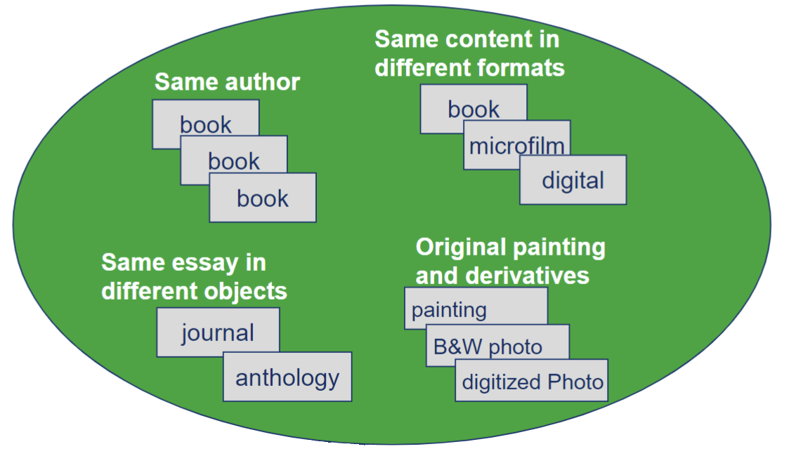
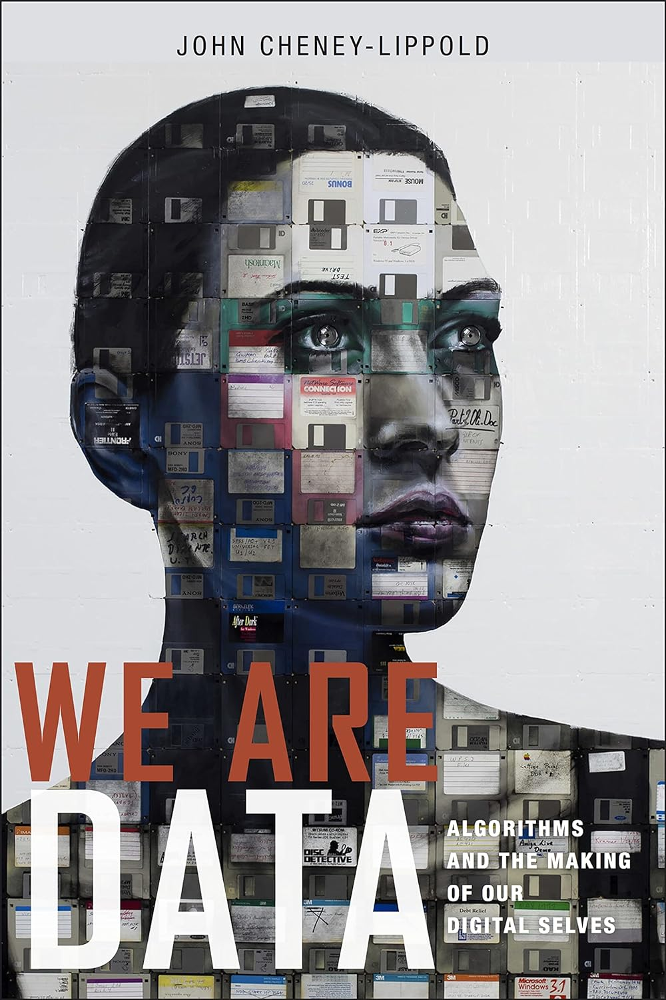
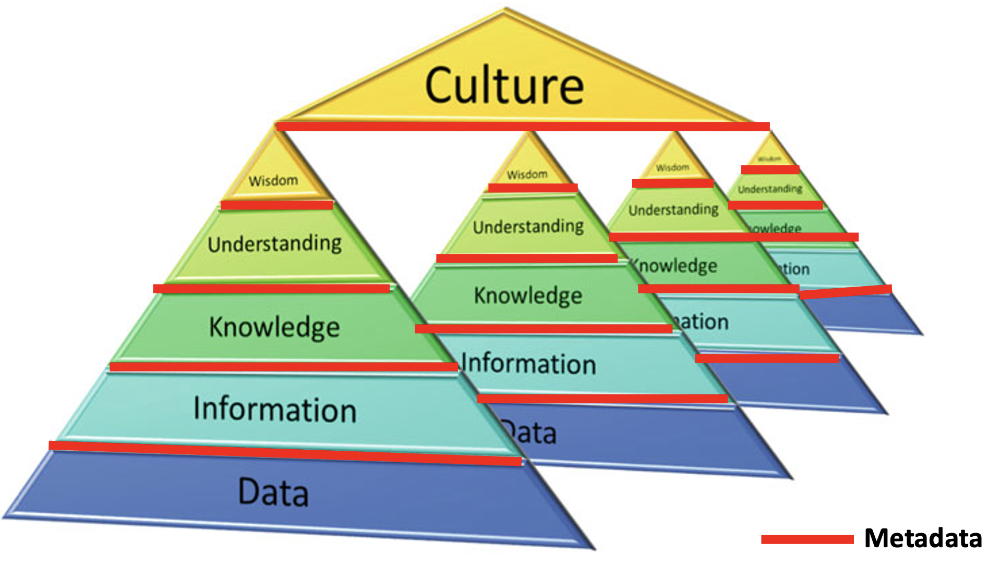
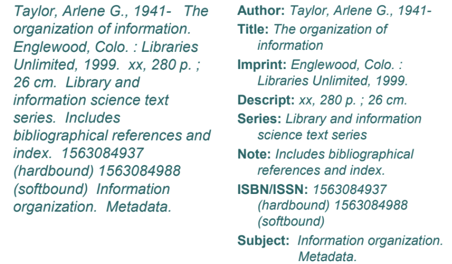
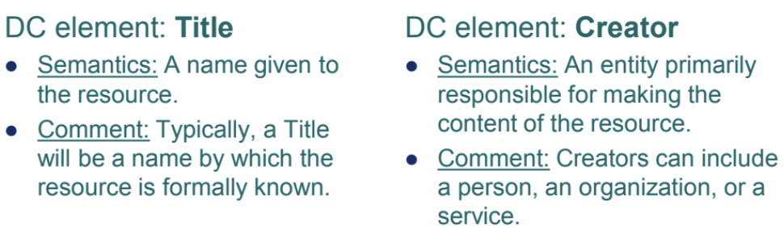
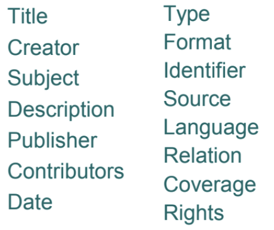

Week 2: Representation & Surrogation
LIS 5043: Organization of Information
Introduction
- Two central concepts in the organization of information are
representationandsurrogation Representationis a complex process. It is both the process and the product, depending on the context in which you are engaging with the conceptSurrogationis related to representation but can be thought of more as a process with a surrogate being the result of the surrogation processSurrogatesare objects that stand in place of something else, for example, a library card catalog record (MARC record) stands in place of the actual item in the library’s collection (such as book, cd, dvd) etc.- Whenever we create a surrogate, we have to decide what to represent (or to highlight) about the object and in the same instance, what NOT to represent about the object
Representation
Many types and levels of representation:
Representation of
user's information needsRepresentations of
information objectsRepresentations of
relationships among objectsRepresentations
manipulated by systems
Ultimately, representations interact to connect users to information
Model of Information Retrieval

Library Paradigm for Representation
Representation answers two questions
What is the item?- Represent the container
- Bibliographic representation
- Descriptive, not evaluative
- Uniquely identify/describe an object
- Distinguish one object from another through metadata
What is the item about?- Represent the content
- Subject representation
- Identify topics, concepts, perspectives, etc.
- Adequately represent object’s content so user can find the object based on search topic
- CONTEXT??
Other questions…How good is it? How will it be useful to me?
Two Primary Challenges
- How to individually represent information objects
as concrete entitiesso they can be found when needed?- Container-oriented
- Uniqueness-oriented
- How to represent and relate information objects
as sources of information on various subjectsso they can be found by those in search of the information?- Content-oriented
- Relationship-oriented
Relations in the Bibliographic Universe
Identifying Relationships
Separate containers, same content- Different formats
Separate containers, similar content- Translation, abridged, versions, editions
Seperate containers, same author, different content- Link together all objects by author
Seperate containers, different authors, similar content- Link together all objects by subject
Unique representations of containerRelationships established through various means- Name authority control
- Controlled vocabulary
Bibliographic Tools (Instruments)
- Mechanisms by which bibliographic control is established and maintained
- Examples of tools (contain representations)
- Library catalog
- Bibliographic
- Indexes to journal literature
- Finding aids
- Library catalog
- Three functions of all bibliographic tools
- Identification or finding
- Collocation or gathering
- Evaluation or selecting
- Representations must support these functions
Representation Responsive to Users
What to users want to do?- Search?
- Evaluate?
How do our representations support their tasks?- Library catalog representations support
four generic user tasks (FRBR)- Find
- Identify
- Select
- Acquire or obtain
Metadata and Metadata Schemes
Data about an entity
Information in the library catalog
Metadata indicates something beyond the data: a statement or statements about the data
All metadata bears the imprint of its origins and intended use when examined closely enough
- It is “
structured information that describes, explain, locates, or otherwise makes it easier to retrieve, use, or manage an information resource” (NISO, 2017:1) - Metadata scheme consists of metadata elements
- Library catalog metadata scheme (MARC) contains
metadata elementsfor title, author, subject, publisher, etc
- Library catalog metadata scheme (MARC) contains
- Metadata element represents an
attribute of the object
Purpose and Functions of Metadata
Purpose: represent an entityFunctions- Discovering or finding that an entity exists
- Evaluating or selecting an entity
- Locating or accessing an entity
- Others such as collection management, rating content, managing intellectual property rights
Application areas- Libraries
- Websites
- Government agencies
- Museums
Human Construct
- Metadata is a human construct and not found in nature
- It is designed to solve particular problem
- Nothing objective about it
- It makes subjective statement
- what should be included
- what should be omitted
- where to draw boundaries
- what terms can be used to describe it
We are Data
We are filled with data in today’s networked society
through our web activity, we are assigned gender, ethnicity, class, age, education level, and potential status of parent with x no. of children (digital trace data/digital footprint/digital breadcrumbs)
if internet metadata identifies a user as foreigner than they lose right to privacy afforded to U.S. citizens
who would have thought that class status, citizenship, ethnicity could be algorithmically understood?

John Cheney-Lippold. (2017). We are Data: algorithms and the making of our digital selves. New York University Press.
Metadata Examples


https://dataedo.com/kb/data-glossary/what-is-metadata
Representative Statements
- How should we create our statements?
- We want statements that represent the aspects of information objects that will help users meet their goals
- i.e. to find, manage, select, locate, obtain
- In a consistent way
- so that users can compare descriptions

Administrative Metadata
Metadata used in managing and administering collections and information resources
- Examples
- Acquisition information
- Rights information
- Location information
Descriptive Metadata
Metadata used to identify and describe collections and related information resources
- Examples
- Cataloging records
- Finding aids
Preservation Metadata
Metadata related to the preservation management of collections and information resources
- Examples
- documentation of physical condition
- documentation of preservation actions
Technical Metadata
Metadata related to how a system functions or metadata behaves
- Examples
- Hardware and software documentation
- Technical details of digitization process
- Authentication and encryption information
Use Metadata
Metadata related to the level and type of use of collections and information resources
- Examples
- Circulation records
- Search logs
- User tracking
User-Generated Metadata
Metadata generated by users online
- Examples
- Social-Bookmarks
- Reviews on Amazons and Goodreads
- Tags on LibraryThing
- Folksonomy (collaborative tagging, social indexing, social tagging)
- Crowdsourcing
Power of Metadata: Structure
Metadata Elements and Semantics
- Each element needs a name
- Each element needs a definition (semantics)
- The semantics describe the information content associated with an element
- Input rules associated with an element

- 15 elements to represent digital resources
- Also used for analog resources

- Government Information Locator Service (GILS)
- Metadata scheme for describing government information
- 67 elements
- Federal Geographic Data Committee (FGDC)
- Metadata scheme for describing geospatial information
- 100+ elements
- Encoded Archival Description (EAD)
- Used within the archival community
- And many more….
- Visual Resources Core, MODS, etc.
Focus So Far, Upcoming Weeks
- Structuring the representation
- Selecting object attributes to represent (based on users, user questions, and collection’s objects)
- Labeling attributes through the metadata elements/field names
- Defining the elements (semantics) to indicate information about object to record
- In a few weeks we will try some data modeling